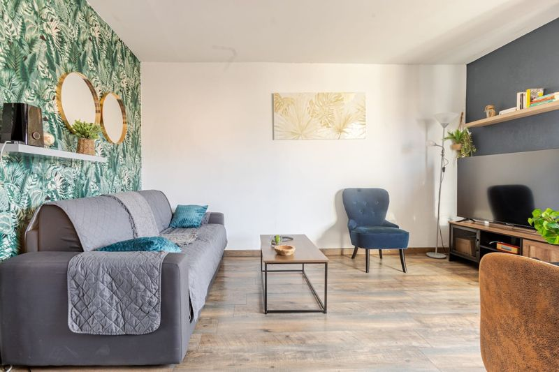

Questions fréquentes
Tout ce qu'il faut savoir avant d'arriver
Arrivée, linge, parking, prix, annulation : les réponses courtes, sans surprise.
Les questions générales
Comment se passe l'arrivée ?
Arrivée 100 % autonome : serrure connectée Igloohome ou boîte à clés selon le logement. Les codes, photos et instructions sont envoyés avant l'arrivée.
Quelles sont les heures d'arrivée et de départ ?
Elles dépendent du logement : arrivée entre 13 h et 15 h, départ entre 10 h et 11 h. Les horaires exacts sont indiqués sur la page de chaque logement.
Le linge est-il fourni ?
Oui : draps et serviettes fournis dans tous nos logements (1 serviette par voyageur).
Y a-t-il le Wi-Fi ?
Oui, le Wi-Fi est gratuit dans tous nos logements (fibre au Studio Cathédrale, à Colmar et à Erstein).
Y a-t-il une machine à laver ?
Oui au Brasseur et au Cocon, avec un sèche-linge. Pour les autres logements, demandez-nous avant de réserver.
Où peut-on se garer ?
Cela dépend du logement. À Erstein et près du Cocon, le stationnement est gratuit dans les rues. Au Brasseur, la zone bleue devant est payante et des places gratuites se trouvent dans les rues à côté. À Strasbourg, le parking des Bateliers (payant) est à 5 min à pied. À Colmar, la rue est payante du lundi au samedi (gratuit le soir et le dimanche) et un parking gratuit se trouve à 8 min. Le détail est rappelé sur chaque page.
Y a-t-il un ascenseur ?
Non : nos logements sont à l'étage sans ascenseur (Studio Cathédrale 4ᵉ, Colmar 3ᵉ, Cocon 2ᵉ, Erstein 1er). Seul Le Brasseur est de plain-pied.
Quelle est la politique d'annulation ?
Non remboursable moins de 30 jours avant l'arrivée. L'option « annulation prolongée » Airbnb (petit supplément) permet d'annuler gratuitement jusqu'à 24 h avant.
Peut-on fumer ?
Non, tous nos logements sont non-fumeurs à l'intérieur.
Les animaux sont-ils acceptés ?
Oui à Erstein, uniquement sur déclaration préalable. Pour les autres logements, demandez-nous avant de réserver.
Y a-t-il un lit bébé ?
Lit bébé sur demande (petit supplément) à Colmar, à Erstein et au Brasseur ; selon disponibilité dans les autres logements.
Comment réserver sans passer par Airbnb ?
Sur la page du logement, indiquez vos dates : le prix exact s'affiche en direct et la réservation se fait sur notre site, sans frais de plateforme. Vous pouvez aussi nous écrire avec le formulaire de contact.
Comment le prix est-il calculé ?
Il dépend des dates et du nombre de nuits. Choisissez vos dates d'arrivée et de départ : le prix de votre séjour s'affiche aussitôt, en direct depuis notre calendrier de réservation (nuits + éventuels frais de ménage).
Réserver en direct, ça change quoi ?
Vous réservez directement sur notre site : pas de frais de voyageur Airbnb ajoutés, et un échange direct avec nous.
Le prix affiché est-il le prix final ?
Oui. Le calendrier de réservation affiche le total de votre séjour : les nuits, le ménage et les taxes sont inclus. Aucun frais n'est ajouté au moment de payer.
Comment savoir si mes dates sont libres ?
Utilisez le calendrier de la page du logement : seules les dates disponibles restent cliquables. Les dates déjà réservées apparaissent en grisé et ne peuvent pas être sélectionnées.
Puis-je poser une question avant de réserver ?
Oui. Le formulaire « Une date en tête ? » se trouve en bas de chaque page : laissez votre e-mail et vos dates, nous vous répondons par e-mail, en général dans la journée.
Combien de voyageurs peut-on loger ?
Cela dépend du logement : 2 voyageurs au Studio Cathédrale, jusqu'à 4 à Colmar, à Erstein et au Brasseur, jusqu'à 6 au Cocon. Le nombre exact est indiqué sur chaque page.
Comment suis-je prévenu que ma réservation est acceptée ?
Vous recevez une confirmation par e-mail à l'adresse indiquée lors de la réservation, avec le récapitulatif de votre séjour et les informations d'arrivée.
Puis-je prolonger mon séjour une fois sur place ?
C'est possible selon les réservations suivantes. Écrivez-nous le plus tôt possible : si les dates sont libres, nous vous envoyons une proposition pour le supplément de nuits.
Le logement est-il calme ?
Chacun de nos logements est choisi pour son calme et sa luminosité : les rues, la vue et les éventuelles nuisances sonores sont indiqués sur la page du logement.
Question par logement
Studio Cathédrale · Strasbourg
Combien de voyageurs, quelle surface ?
2 voyageurs · 18 m² · lit 140 × 200.
Quelles sont les heures d'arrivée et de départ ?
Arrivée à partir de 13 h, départ avant 10 h. L'arrivée est autonome : les codes et les instructions arrivent avant votre venue.
Quel est l'étage ? Y a-t-il un ascenseur ?
4ᵉ étage sans ascenseur.
Où peut-on se garer ?
Pas de parking devant l'immeuble. Le parking des Bateliers (payant) est à 5 min à pied.
Les animaux sont-ils acceptés ?
Pas par défaut : demandez-nous avant de réserver.
Y a-t-il un lit bébé ?
Selon disponibilité : demandez-nous avant de réserver.
Colmar — Petite Venise · Colmar
Combien de voyageurs, quelle surface ?
Jusqu'à 4 voyageurs · lit queen + canapé-lit · 3ᵉ étage.
Quelles sont les heures d'arrivée et de départ ?
Arrivée à partir de 15 h, départ avant 11 h. L'arrivée est autonome : les codes et les instructions arrivent avant votre venue.
Quel est l'étage ? Y a-t-il un ascenseur ?
3ᵉ étage sans ascenseur.
Où peut-on se garer ?
Stationnement dans la rue payant du lundi au samedi (gratuit le soir et le dimanche) ; parking gratuit à 8 min à pied.
Les animaux sont-ils acceptés ?
Pas par défaut : demandez-nous avant de réserver.
Y a-t-il un lit bébé ?
Oui, sur demande (petit supplément).
Erstein — calme et gare · Erstein
Combien de voyageurs, quelle surface ?
Jusqu'à 4 voyageurs · 40 m² · lit queen + canapé-lit.
Quelles sont les heures d'arrivée et de départ ?
Arrivée à partir de 14 h, départ avant 10 h. L'arrivée est autonome : les codes et les instructions arrivent avant votre venue.
Quel est l'étage ? Y a-t-il un ascenseur ?
1er étage sans ascenseur.
Où peut-on se garer ?
Parking gratuit dans la rue (rue Henri-Dunant).
Les animaux sont-ils acceptés ?
Oui, sur déclaration préalable.
Y a-t-il un lit bébé ?
Lit bébé parapluie sur demande (petit supplément).
Le Brasseur · Schiltigheim
Combien de voyageurs, quelle surface ?
Jusqu'à 4 voyageurs · T2 de 39 m² · plain-pied.
Quelles sont les heures d'arrivée et de départ ?
Arrivée à partir de 15 h, départ avant 11 h. L'arrivée est autonome : les codes et les instructions arrivent avant votre venue.
Quel est l'étage ? Y a-t-il un ascenseur ?
De plain-pied (une petite marche à l'entrée).
Où peut-on se garer ?
Pas de parking privé : la zone bleue devant est payante, des places gratuites se trouvent dans les rues à côté.
Y a-t-il un lave-linge ?
Oui, avec un sèche-linge.
Les animaux sont-ils acceptés ?
Pas par défaut : demandez-nous avant de réserver.
Y a-t-il un lit bébé ?
Lit bébé parapluie sur demande (petit supplément).
Cocon · Illkirch-Graffenstaden
Combien de voyageurs, quelle surface ?
Jusqu'à 6 voyageurs · 120 m² · balcon.
Quelles sont les heures d'arrivée et de départ ?
Arrivée à partir de 15 h, départ avant 11 h. L'arrivée est autonome : les codes et les instructions arrivent avant votre venue.
Quel est l'étage ? Y a-t-il un ascenseur ?
2ᵉ étage sans ascenseur.
Où peut-on se garer ?
Des places de parking gratuites se trouvent dans les rues autour de l'immeuble.
Y a-t-il un lave-linge ?
Oui, avec un sèche-linge.
Les animaux sont-ils acceptés ?
Pas par défaut : demandez-nous avant de réserver.
Y a-t-il un lit bébé ?
Selon disponibilité : demandez-nous avant de réserver.
Une question, une date en tête ?
Écrivez-nous, on répond vite
Dites-nous vos dates, le nombre de voyageurs et ce qui compte pour vous. Réponse par e-mail, en général dans la journée.
Les logements
Et si on choisissait ?

Colmar
Colmar — Petite Venise
Appartement lumineux à 2 pas du centre historique et de la Petite Venise.
Découvrir le logement
Erstein
Erstein — calme et gare
Appartement rénové 40 m² dans une ville calme à 20 min de Strasbourg en train.
Découvrir le logement
Schiltigheim
Le Brasseur
T2 de plain-pied 39 m² à Schiltigheim, à deux pas du Parlement européen et des commerces.
Découvrir le logement
Illkirch-Graffenstaden
Cocon
Appartement design de 120 m² à Illkirch-Graffenstaden, au sud de Strasbourg, tramway direct vers le centre-ville.
Découvrir le logement